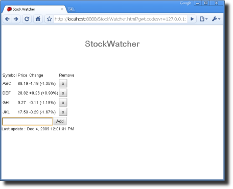
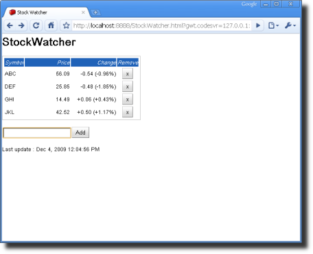
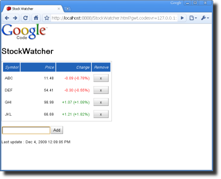

Except as otherwise noted,
the content of this page is licensed under the Creative Commons
Attribution 3.0 License.
Google Code offered in: English - Español - 日本語 - 한국어 - Português - Pусский - 中文(简体) - 中文(繁體)
At this point, StockWatcher is functional. Now you want to give it some visual style.
In this section, you'll:
GWT provides very few Java methods directly related to style. Rather, we encourage you to define styles in Cascading Style Sheets.
When it comes to styling web applications, CSS is ideal. In addition to cleanly separating style from application logic, this division of labor helps applications load and render more quickly, consume less memory, and even makes them easier to tweak during edit/debug cycles because there's no need to recompile for style tweaks.
Two style sheets are already associated with the StockWatcher project.
When you used webAppCreator to create StockWatcher, it created the application style sheet (StockWatcher.css). It also referenced the theme in the GWT module.
<?xml version="1.0" encoding="UTF-8"?>
<module rename-to='stockwatcher'>
<!-- Inherit the core Web Toolkit stuff. -->
<inherits name='com.google.gwt.user.User'/>
<!-- Inherit the default GWT style sheet. You can change -->
<!-- the theme of your GWT application by uncommenting -->
<!-- any one of the following lines. -->
<inherits name='com.google.gwt.user.theme.standard.Standard'/>
<!-- <inherits name="com.google.gwt.user.theme.chrome.Chrome"/> -->
<!-- <inherits name="com.google.gwt.user.theme.dark.Dark"/> -->
<!-- Other module inherits -->
<!-- Specify the app entry point class. -->
<entry-point class='com.google.gwt.sample.stockwatcher.client.StockWatcher'/>
</module>
<!DOCTYPE HTML PUBLIC "-//W3C//DTD HTML 4.01 Transitional//EN">
<html>
<head>
<meta http-equiv="content-type" content="text/html; charset=UTF-8">
<link type="text/css" rel="stylesheet" href="StockWatcher.css">
<title>StockWatcher</title>
<script type="text/javascript" language="javascript" src="stockwatcher/stockwatcher.nocache.js"></script>
</head>
<body>
<h1>StockWatcher</h1>
<div id="stockList"></div>
<iframe src="javascript:''" id="__gwt_historyFrame" tabIndex='-1'
style="position:absolute;width:0;height:0;border:0"></iframe>
</body>
</html>
Like images, CSS files are static resources that are stored in the public directory and referenced from the HTML host page. You can associate a style sheet with your application either of two ways.
Whichever method you choose, you can associate one or more application style sheets with your project. They cascade in the order they are listed, just as they do in an HTML document.
For StockWatcher, you'll follow the preferred strategy. Rather than put links to the style sheets in the HTML host page, you'll use the module XML file. Then, when you compile StockWatcher, the GWT compiler will bundle all the static resources required to run your application including the style sheets. This mechanism is called Automatic Resource Inclusion.
In most cases, it is the better strategy because the style sheet will follow your module wherever it is used in new contexts, no matter what HTML host page you embed it in. As you get into more complex development, you will want to reuse or share modules. Shared modules do not include a host page and therefore, you cannot guarantee the availabilty of the application style sheet unless you use Automatic Resource Inclusion.
If you have a case where you want whatever host page your module is embedded in to dictate the styles for its widgets, then don't include the style sheet in the module XML file.
GWT ships with three themes: Standard, Chrome, and Dark. The Standard theme is selected by default when the GWT module is created. Each application can use only one theme at a time. However, if you have an existing style or you prefer to design one from scratch, you don't have to use any theme at all. Take a moment to see what the other themes look like.
Change the theme from Standard to Dark.
<!-- Inherit the default GWT style sheet. You can change --> <!-- the theme of your GWT application by uncommenting --> <!-- any one of the following lines. --> <!-- <inherits name='com.google.gwt.user.theme.standard.Standard'/> --> <!-- <inherits name="com.google.gwt.user.theme.chrome.Chrome"/> --> <inherits name="com.google.gwt.user.theme.dark.Dark"/>
For StockWatcher, you are going to build on the Standard theme. So after you've played around to see how themes work, set the theme back to Standard.
Note: GWT themes also come in RTL (right-to-left) versions to support languages written from right-to-left, such as arabic. To use a right-to-left theme, append RTL to the theme name.
<inherits name='com.google.gwt.user.theme.standard.StandardRTL'/>
There are various ways you can modify GWT's default styles.
For the StockWatcher application, you'll focus mostly on the second approach: you'll learn to append a secondary style.
You might have noticed the buttons for StockWatcher have a gradient background. Where is the button style coming from?
If, after you compile StockWatcher, you look at the generated JavaScript for the Add button, you will see that the button has a class attribute of gwt-Button:<button class="gwt-Button" tabindex="0" type="button">Add</button>
In GWT, each class of widget has an associated style name (like gwt-Button) that binds it to a CSS style rule. This is the widget's primary style. Default values are defined for the primary style in the theme style sheet.
| Type of Element | HTML Tag | CSS Selector |
|---|---|---|
| Buttons in static HTML and GWT-generated buttons |
<button> | button |
| Only GWT-generated buttons | <button class="gwt-Button"> | button.gwt-Button |
| Only my special GWT-generated button | <button class="gwt-Button my-button"> | button.my-button |
Tip: You can look up the name of the style rule (the CSS selector) for each widget by accessing the GWT API Reference via the Widget Gallery.
GWT takes advantage of the fact that you can associate multiple classes with an HTML element so that you can specify a style for a specific GWT-generated element and not affect others of the same type. In this section, you'll learn how to set the secondary class on a GWT-generated HTML element.
Creating a secondary style for an HTML element is a two-step process:
Let's make one quick change to see how the mechanism works. Then you can make the rest of the changes in one pass. We'll start by changing the colors of the first row where we've stored header information.
When you created the StockWatcher application, webAppCreator generated the application style sheet (StockWatcher.css) and added a pointer to it in the module XML file (StockWatcher.gwt.xml). So, you're ready to start defining style rules.
/* Formatting specific to the StockWatcher application */
body {
padding: 10px;
}
/* stock list header row */
.watchListHeader {
background-color: #2062B8;
color: white;
font-style: italic;
}
In a web page with static elements, you would now go through the HTML source and add class attributes to various elements to associate them with the styles defined in the CSS file. For example:
<tr class="watchListHeader">
However, GWT elements are created dynamically at runtime. So you'll set the HTML class attributes in the Java source using the addStyleName method. You'll specify the row (the header is row 0) and the name of the secondary class, watchListHeader.
public void onModuleLoad() {
// Create table for stock data.
stocksFlexTable.setText(0, 0, "Symbol");
stocksFlexTable.setText(0, 1, "Price");
stocksFlexTable.setText(0, 2, "Change");
stocksFlexTable.setText(0, 3, "Remove");
// Add styles to elements in the stock list table.
stocksFlexTable.getRowFormatter().addStyleName(0, "watchListHeader");Each of the changes we will make by creating a secondary style is outlined below. You can apply them one at a time to see the effect of each change or you can copy and paste the set of changes summarized at the end of this section.
/* stock list header row */
.watchListHeader {
background-color: #2062B8;
color: white;
font-style: italic;
}
/* stock list flex table */
.watchList {
border: 1px solid silver;
padding: 2px;
margin-bottom:6px;
}
// Add styles to elements in the stock list table.
stocksFlexTable.getRowFormatter().addStyleName(0, "watchListHeader");
stocksFlexTable.addStyleName("watchList");First, you'll format the text in the stock table's header row, which loads when StockWatcher is launched. Later, you'll apply the same style rules to the table rows that contain the stock data.
/* stock list flex table */
.watchList {
border: 1px solid silver;
padding: 2px;
margin-bottom:6px;
}
/* stock list Price and Change fields */
.watchListNumericColumn {
text-align: right;
width:8em;
}
// Add styles to elements in the stock list table.
stocksFlexTable.getRowFormatter().addStyleName(0, "watchListHeader");
stocksFlexTable.addStyleName("watchList");
stocksFlexTable.getCellFormatter().addStyleName(0, 1, "watchListNumericColumn");
stocksFlexTable.getCellFormatter().addStyleName(0, 2, "watchListNumericColumn");
/* stock list Price and Change fields */
.watchListNumericColumn {
text-align: right;
width:8em;
}
/* stock list Remove column */
.watchListRemoveColumn {
text-align: center;
}
// Add styles to elements in the stock list table.
stocksFlexTable.getRowFormatter().addStyleName(0, "watchListHeader");
stocksFlexTable.addStyleName("watchList");
stocksFlexTable.getCellFormatter().addStyleName(0, 1, "watchListNumericColumn");
stocksFlexTable.getCellFormatter().addStyleName(0, 2, "watchListNumericColumn");
stocksFlexTable.getCellFormatter().addStyleName(0, 3, "watchListRemoveColumn");You've formatted the header row of the flex table, which is displayed when StockWatcher starts up. Remember, however, that in a flex table, the rows holding the stocks aren't created until the user adds a stock to the list. Therefore, you will add the code for formatting the stock data in the addStock method rather than in the onLoad method.
// Add the stock to the table.
int row = stocksFlexTable.getRowCount();
stocks.add(symbol);
stocksFlexTable.setText(row, 0, symbol);
stocksFlexTable.getCellFormatter().addStyleName(row, 1, "watchListNumericColumn");
stocksFlexTable.getCellFormatter().addStyleName(row, 2, "watchListNumericColumn");
stocksFlexTable.getCellFormatter().addStyleName(row, 3, "watchListRemoveColumn");Add whitespace around the text box and Add button in the Add Stock panel.
/* stock list Remove column */
.watchListRemoveColumn {
text-align: center;
}
/* Add Stock panel */
.addPanel {
margin: 10px 0px 15px 0px;
}
// Assemble Add Stock panel.
addPanel.add(newSymbolTextBox);
addPanel.add(addStockButton);
addPanel.addStyleName("addPanel");Here the summary of the changes we've done so far.

/* Formatting specific to the StockWatcher application */
body {
padding: 10px;
}
/* stock list header row */
.watchListHeader {
background-color: #2062B8;
color: white;
font-style: italic;
}
/* stock list flex table */
.watchList {
border: 1px solid silver;
padding: 2px;
margin-bottom:6px;
}
/* stock list Price and Change fields */
.watchListNumericColumn {
text-align: right;
width:8em;
}
/* stock list Remove column */
.watchListRemoveColumn {
text-align: center;
}
/* Add Stock panel */
.addPanel {
margin: 10px 0px 15px 0px;
}
public void onModuleLoad() {
// Create table for stock data.
stocksFlexTable.setText(0, 0, "Symbol");
stocksFlexTable.setText(0, 1, "Price");
stocksFlexTable.setText(0, 2, "Change");
stocksFlexTable.setText(0, 3, "Remove");
// Add styles to elements in the stock list table.
stocksFlexTable.getRowFormatter().addStyleName(0, "watchListHeader");
stocksFlexTable.addStyleName("watchList");
stocksFlexTable.getCellFormatter().addStyleName(0, 1, "watchListNumericColumn");
stocksFlexTable.getCellFormatter().addStyleName(0, 2, "watchListNumericColumn");
stocksFlexTable.getCellFormatter().addStyleName(0, 3, "watchListRemoveColumn");
// Assemble the Add Stock panel
addPanel.add(newSymbolTextBox);
addPanel.add(addStockButton);
addPanel.addStyleName("addPanel");
.
.
.
}
// Add the stock to the table.
int row = stocksFlexTable.getRowCount();
stocks.add(symbol);
stocksFlexTable.setText(row, 0, symbol);
stocksFlexTable.getCellFormatter().addStyleName(row, 1, "watchListNumericColumn");
stocksFlexTable.getCellFormatter().addStyleName(row, 2, "watchListNumericColumn");
stocksFlexTable.getCellFormatter().addStyleName(row, 3, "watchListRemoveColumn");
Next you want to change the style of the Remove button. The Remove button inherits its style from the Button widget. Default styles for all GWT Button widgets are defined by GWT in standard.css.
<button class="gwt-Button tabindex="0" type="button">x</button>
.gwt-Button {
background:transparent url(images/hborder.png) repeat-x scroll 0px -27px;
border:1px outset #CCCCCC;
cursor:pointer;
font-size:small;
margin:0pt;
padding:3px 5px;
text-decoration:none;
}
For StockWatcher, you want your style change to apply only to the Remove button. So you'll do just as you've been doing: add a secondary style to the Remove button element. But this time, you'll make the secondary style dependent on the primary style. Dependent styles are powerful because they are automatically updated whenever the primary style name changes. In contrast, secondary style names that are not dependent style names are not automatically updated when the primary style name changes.
To do this, you'll use the addStyleDependentName method instead of the addStyleName method.
/* Add Stock panel */
.addPanel {
margin: 10px 0px 15px 0px;
}
/* stock list, the Remove button */
.gwt-Button-remove {
width: 50px;
}
// Add a button to remove this stock from the table.
Button removeStockButton = new Button("x");
removeStockButton.addStyleDependentName("remove");<button class="gwt-Button gwt-Button-remove" tabindex="0" type="button">x</button>
The final style change you want to implement is changing the color of the price change. If the stock price goes up, StockWatcher displays it in green; down, in red; no change, in black. This is the one style that changes dynamically as StockWatcher runs.
You've already applied an HTML class attribute to the cell element to right-align the numeric values inside the cells. To keep the code simple, it would be nice if you could apply the HTML class attributes just to the text inside the cell. An easy way to do this would be to use a nested widget. In this case, you'll insert a Label widget inside every cell inside column 2.
/* stock list, the Remove button */
.gwt-Button-remove {
width: 50px;
}
/* Dynamic color changes for the Change field */
.noChange {
color: black;
}
.positiveChange {
color: green;
}
.negativeChange {
color: red;
}
// Add the stock to the table.
int row = stocksFlexTable.getRowCount();
stocks.add(symbol);
stocksFlexTable.setText(row, 0, symbol);
stocksFlexTable.setWidget(row, 2, new Label());
stocksFlexTable.getCellFormatter().addStyleName(row, 1, "watchListNumericColumn");
stocksFlexTable.getCellFormatter().addStyleName(row, 2, "watchListNumericColumn");
stocksFlexTable.getCellFormatter().addStyleName(row, 3, "watchListRemoveColumn");
// Populate the Price and Change fields with new data.
stocksFlexTable.setText(row, 1, priceText);
stocksFlexTable.setText(row, 2, changeText + " (" + changePercentText
+ "%)");
Label changeWidget = (Label)stocksFlexTable.getWidget(row, 2);
changeWidget.setText(changeText + " (" + changePercentText + "%)");
// Populate the Price and Change fields with new data.
stocksFlexTable.setText(row, 1, priceText);
Label changeWidget = (Label)stocksFlexTable.getWidget(row, 2);
changeWidget.setText(changeText + " (" + changePercentText + "%)");
// Change the color of text in the Change field based on its value.
String changeStyleName = "noChange";
if (price.getChangePercent() < -0.1f) {
changeStyleName = "negativeChange";
}
else if (price.getChangePercent() > 0.1f) {
changeStyleName = "positiveChange";
}
changeWidget.setStyleName(changeStyleName);Occasionally, you do want to set style attributes directly on an HTML element rather than define a style rule in CSS. For example, the HTML table element has a cellpadding attribute that is convenient for setting the padding on all the cells in the table.
In GWT, depending on the HTML element, you can set some attributes in the Java code to generate the appropriate HTML.
public void onModuleLoad() {
// Create table for stock data.
stocksFlexTable.setText(0, 0, "Symbol");
stocksFlexTable.setText(0, 1, "Price");
stocksFlexTable.setText(0, 2, "Change");
stocksFlexTable.setText(0, 3, "Remove");
// Add styles to elements in the stock list table.
stocksFlexTable.setCellPadding(6);Your application's HTML host page can include whatever additional static HTML elements you require. For example, in StockWatcher, you'll add the Google Code logo. To include images, put them in the project's public directory. The GWT compiler will copy all the necessary files to the output directory for deployment.

To include static images in the application.
StockWatcher/war/images
StockWatcher/war/images/GoogleCode.png
<!DOCTYPE HTML PUBLIC "-//W3C//DTD HTML 4.01 Transitional//EN">
<html>
<head>
<meta http-equiv="content-type" content="text/html; charset=UTF-8">
<link type="text/css" rel="stylesheet" href="StockWatcher.css">
<title>StockWatcher</title>
<script type="text/javascript" language="javascript" src="stockwatcher/stockwatcher.nocache.js"></script>
</head>
<body>
<img src="images/GoogleCode.png" />
<h1>StockWatcher</h1>
<div id="stockList"></div>
<iframe src="javascript:''" id="__gwt_historyFrame" tabIndex='-1' style="position:absolute;width:0;height:0;border:0"></iframe>
</body>
</html>Note: HTML comments have been omitted for brevity.
In Depth: For more information on including style sheets, JavaScript files, and other GWT modules, see the Developer's Guide, Automatic Resource Inclusion.
At this point you've finished with the initial implementation of StockWatcher. The client-side functionality is working and the user interface has a new visual design.
Note: For the sake of simplicity, we created the user interface for this tutorial programmatically using widgets. This works fine for StockWatcher because the UI is fairly simple. However, GWT has a powerful tool called UiBinder that allows you to create complex interfaces using declaritive XML files, which can reduce code size and complexity. Check out Developer's Guide sections on Declarative Layout with UiBinder and Build User Interfaces for more info about UiBinder and UI design in general.
Now you're ready to compile StockWatcher. You'll compile your Java code into JavaScript and check that StockWatcher runs the same way in production mode as it has in development mode.